Focus Fit · operado por Arthur Volz
A conta é apagada no mesmo instante.
Se você não tem mais o app instalado ou não consegue entrar, peça a exclusão por um destes canais, a partir do e-mail cadastrado na conta ou informando esse e-mail:
Confirmamos que o pedido é seu e apagamos a conta em até 30 dias.
O registro da compra: e-mail do comprador, plano, situação e datas da assinatura, informados pela plataforma de pagamento. Guardamos pelo prazo que a lei fiscal e o Código de Defesa do Consumidor exigem, só para comprovar a compra. Esses dados não são usados para mais nada.
Excluir a conta não cancela a cobrança. A assinatura é feita na plataforma de pagamento. Para parar de ser cobrado, fale com o suporte no WhatsApp acima que cancelamos para você.